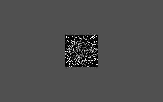
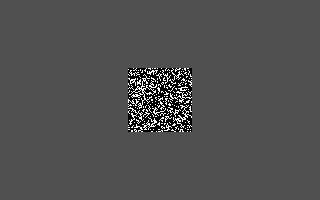
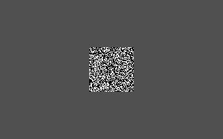
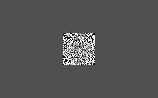

| [ < ] | [ > ] | [ << ] | [ Up ] | [ >> ] | [Top] | [Contents] | [Index] | [ ? ] |
RANDEXT Subfunction 2: random-dot square series
Syntax:
RANDEXT 2, lowratio, hiratio
Like subfunction 1 (see section RANDEXT Subfunction 1: random-dot square), draws a
64x64 square of black and white pixels centered on a light gray full
picture (320x200) background. The chance of a pixel being white varies
between lowratio and hiratio.
It is important to understand that each call of the RANDEXT
extension (or any extension) draws exactly one picture. It is the
%I command (see section Create Pictures from CXR) which has the numpics argument
and which repeatedly invokes the extension with the same arguments.
In many cases, like the SQUAREXT or CIRCEXT extension,
a numpics specification over 1 will simply generate the same
picture over again.
Here, however, the numpics argument is used to help set up the
random distribution that determines the fillratio for each square. The
first call to RANDEXT experiment 2 creates the distribution
values that are used for subsequent calls by the same %I command.
For example, this testlist
%X[randext.cxr] %M2%C %I[50,2,.2,.6] %J[1,50,5] |
creates 50 pictures which a fillratio that varies between (approximately) 20% and 60% white pixels.
Examples of the pictures created:
 |
 |
 |
 |